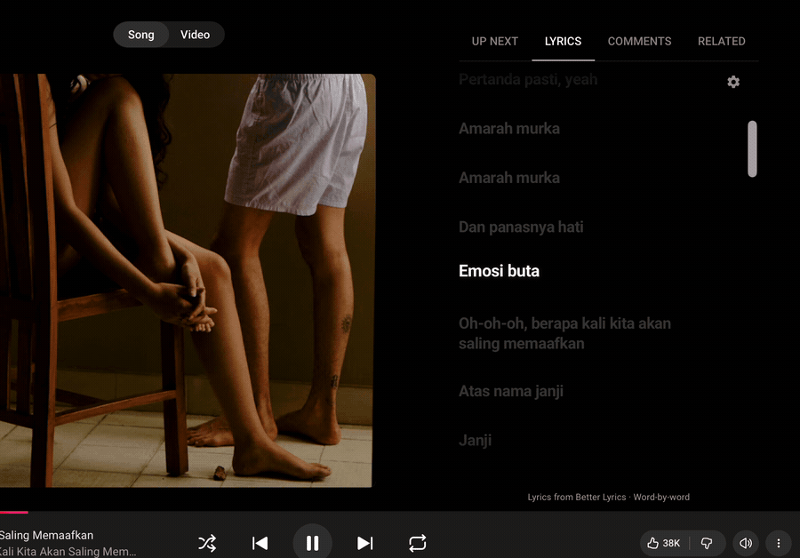

Lyrics that move with your music.
Synced lyrics are in beta. The words follow along as your song plays. Click a line to jump to that part of the song, or move the lyrics forward or back if they feel out of sync.
Music shares song details with third-party lyric providers to find matching lyrics. See Privacy for details.
Requires macOS 15.4 or later.